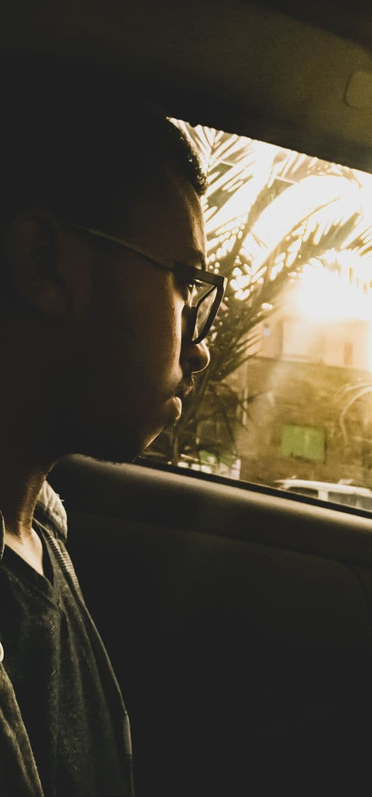

|  |
|
|
Kaleb is a 19 year old guy who likes to draw amongst other things- reading, gaming, watching anime and the list goes on. He is currently a sophomore software engineering student at the AAiT He has a one younger brother - Darik Kaleb is diagnosed with which is why he can't go around unsupervised so he spends most of his time with Darik doing all the things he likes- mostly drawing |
|